Vision MOD
1. 概述
Vision MOD 是 macOS 與 Windows 上的即時視覺合成器。它借用模組合成器 Complex Oscillator 的概念：兩個振盪器中以其中一個塑形另一個。Modifier 素材提供動態，Carrier 素材是被這動態承載的影像；以一段素材去調變另一段素材，產生新的影音現象。
源頭之後的每一站都作用於這條合成後的 Carrier 視覺流。去背只在素材源頭（Fundamental Vision）發生；自此之後無內容的區域 alpha 為 0，下游每一站都會丟棄這些像素，因此整條鏈都維持去背狀態。

Top bar
| HUE | 開關 HUE 色相環面板，調整介面強調色 |
| SIGNAL | 開關 SIGNAL 浮動視窗（音訊輸入 meter + CV Output 路由設定 + 7 條 CV meter） |
| Language | 切換介面語言（EN／日／中），hover 說明同步切換並跨啟動保留 |
| SD status | SD 服務狀態：啟動中顯示 SD Loading，完成後顯示使用中的加速後端 |
HUE 色相環
| Outer ring | 外環：拖曳改變強調色的色相 |
| Centre | 中央：垂直拖曳改變強調色的飽和度 |
| Presets | 預設色相：點選套用珊瑚粉／薄荷綠／天藍／紫羅蘭 |
| Phase colours | 衍生相位色預覽（互補 +180°／三等分 ±120°／類比 ±30°），僅供參考 |
2. 訊號流與模組面板
訊號鏈由主視窗右側的模組面板定義。Fundamental Vision 為固定的素材起點（鎖在第一站），其他模組由使用者自由加入、排序、bypass、刪除。拖曳 grip icon 排序、點 X icon 兩次刪除、勾選框個別 bypass。同一種模組可加入多份 instance，各自獨立記憶參數，由上而下串接執行。
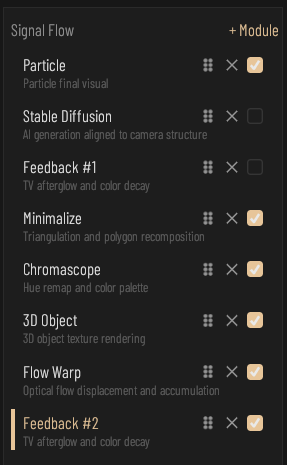
| Catalog | 模組面板（Signal Flow）：訊號流模組列表，由上而下依序執行；同一種模組可加多份獨立 instance，各自參數獨立 |
| Drag to reorder | 拖曳排序：按住 grip icon 上下拖即可改變該 instance 在訊號流中的位置（Fundamental Vision 固定第一站，不可移動） |
| Remove | 刪除 instance：點一次跳出三語確認，再點一次刪除；點面板外或按 Esc 取消 |
| Enable | 啟用該 instance：取消勾選即 bypass（訊號直通至下一站），不影響參數與順序 |
+ Module
+ Module 按鈕開啟模組庫。可加入的模組：Stable Diffusion、Minimalize、Chromascope、3D Object、Particle、Flow Warp、Feedback、Triposr 3D、Slow Motion、Plugin。Stable Diffusion 只能有一份，已在鏈中時該項目反灰。Fundamental Vision 為固定起點，不能加入也不能刪除。
各站共通控制
Fundamental Vision 之後的每一站共用相同的標頭控制：啟用勾選框、Mix、Brightness 與 Position / Scale 拖曳區。Mix 是該站的 dry/wet，也是唯一的混合控制，模組內沒有自己的 mix 推桿。新加入的 instance Mix 從 0 開始，因此加入模組當下不會改變畫面，拉高 Mix 才會生效。
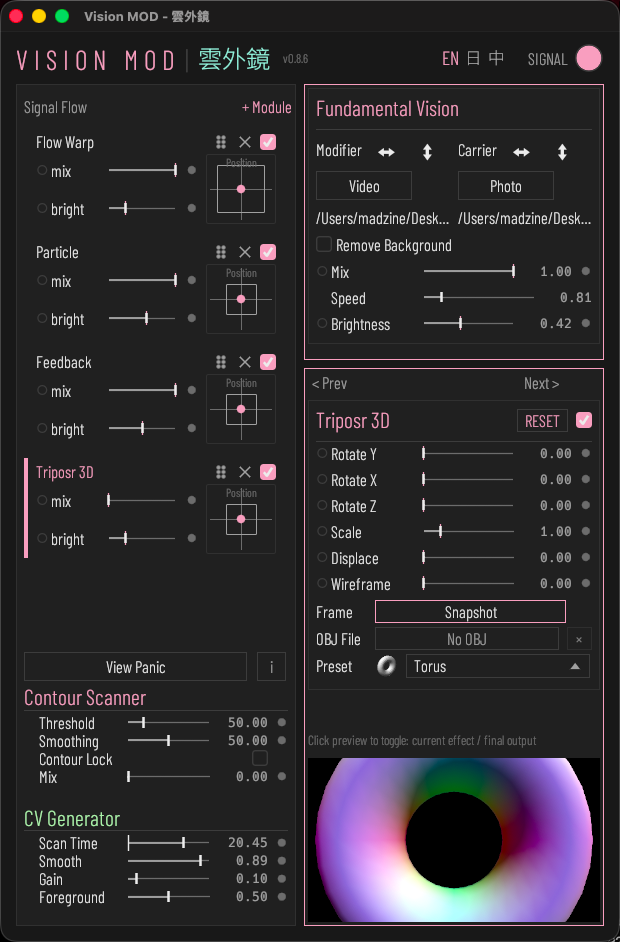
| Mix | 該站 dry/wet 混合：0 直通上一站輸出、1 全效果 |
| Brightness | 該站輸出亮度增益（0–4，雙擊回 1） |
| Position / Scale | 位置／縮放：拖曳移動、滾輪縮放（0.25–4）、雙擊歸零 |
| Detail panel icon | 點開啟該模組的細項設定面板（筆刷遮罩，開發中） |
3. Fundamental Vision（基礎視覺）
素材源頭站。兩個槽並排：左為 Modifier，右為 Carrier。每個槽可接相機、影片檔或照片。Modifier 用來分析 Movement 與 Color 訊號、驅動 Image Displace 與 Flow Warp 的流場；Carrier 是送進訊號鏈的影像本體。

| Card | 素材輸入卡：Modifier（左）調變 Carrier（右），Mix 在兩者間混合 |
| Modifier | Modifier 槽：調變素材，供應 Movement／Color CV、粒子 Displace 與 Flow Warp 光流的來源 |
| Carrier | Carrier 槽：主視覺影像，流向下游處理鏈 |
| Mix | Carrier 與 Modifier 兩來源的混合：往右顯示 Carrier、往左顯示 Modifier |
| Source type | 來源類型：相機／影片／照片三選一（影片與照片用拖放載入） |
| Remove background | 相機去背：MediaPipe 算前景 mask，只保留人物送往後續處理 |
| Flip H | 水平翻轉（左右鏡像）來源影像；於 producer 階段套用，影響整條 chain |
| Flip V | 垂直翻轉（上下鏡像）來源影像；於 producer 階段套用，影響整條 chain |
| Video speed | 載入影片的播放速度（0 暫停、1 原速、5 五倍速） |
相機選單與設定
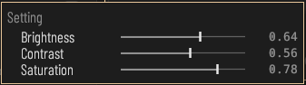
| Camera | 選擇相機輸入裝置 |
| Settings icon | 點開啟相機設定面板（Brightness／Contrast／Saturation 三項硬體可調）；Carrier 與 Modifier 兩相機各自獨立記憶 |
| Brightness | 相機亮度（相機驅動層 UVC / V4L2 對應 axis，0–1） |
| Contrast | 相機對比（相機驅動層 UVC / V4L2 對應 axis，0–1） |
| Saturation | 相機飽和度（相機驅動層 UVC / V4L2 對應 axis，0–1） |
載入影片或照片
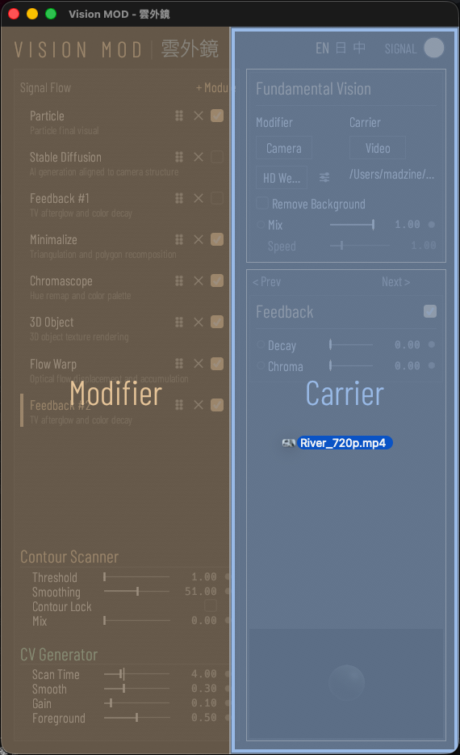
| File path | 目前載入的檔案路徑；把檔案拖進視窗即載入（左半放 Modifier、右半放 Carrier） |
4. Contour Scanner 與 CV Generator
主視窗在模組面板下方固定顯示 Contour Scanner 與 CV Generator。掃描器從畫面偵測輪廓；CV Generator 把掃描、動態與顏色轉成調變訊號。全域動作列（PRESET、PLUGINS、OUTPUT、視覺重啟、說明）位於 Contour Scanner 面板頂端。
Contour Scanner
| Card | 輪廓掃描卡：從畫面偵測輪廓，產生 SEQ 訊號與輪廓疊加顯示 |
| Preview | 輪廓預覽：即時畫面 + 輪廓線 + 可拖曳的掃描範圍圓（ROI） |
| Scan ROI | 掃描範圍圓：拖曳圓心移動掃描錨點，拖曳圓邊調整掃描範圍 |
| Threshold | 輪廓邊緣偵測門檻：值越高只保留越強的邊緣 |
| Smoothing | 輪廓平滑程度：抑制鋸齒與雜訊 |
| Scene Threshold | 輪廓更新閘門（非邊緣偵測門檻）：畫面要變化超過本值百分比才重新偵測輪廓。調高則輪廓保持得更靜止、CPU/GPU 負擔更低；調低反應更靈敏，調 0 則幾乎每幀都重算 |
| Lock | 鎖定當前輪廓：CV 與粒子訊號凍結於勾選瞬間 |
| Mix | 輪廓疊加到畫面的混合比例 |
CV Generator
| Card | CV Generator：從畫面衍生調變訊號（輪廓 SEQ、Movement 動能、Color） |
| Scan Time | 輪廓掃描週期：掃描走完一輪的時間（2-10 秒）；軌道上的白線顯示當前掃描位置 |
| Smooth | SEQ 序列訊號的平滑程度 |
| Gain | Movement 前景動能訊號的增益（來源：Modifier 整張畫面） |
| Foreground | Movement CV 前景門檻；保留 VAV 原接口，目前 Modifier 路徑不經去背，此門檻暫未生效 |
5. Stable Diffusion
把輸入影像轉成 AI 生成畫面。macOS 使用 Stable Diffusion 1.5 + ControlNet + Hyper-SD15 1-step LoRA（Metal）；Windows 使用 Stream Diffusion（CUDA / TensorRT）。鏈中只能有一份 Stable Diffusion。乾濕比例由該站的 Mix 控制；Enable 未勾選時 Mix 強制為 0，訊號鏈不會收到空的 AI 畫面。
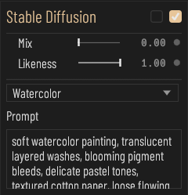
| Enable | 啟用 Stable Diffusion：勾選後載入模型、把相機畫面即時轉成 AI 生成影像；取消即釋放 |
| Grayscale | 強制 AI 輸出灰階去色 |
| Likeness | AI 輸出貼合相機結構的程度（高=像相機） |
| Preset | 切換內建風格 prompt（29 種畫風/材質） |
| Prompt | AI 生成的文字提示（描述想要的畫面風格） |
| LoRA | 選擇 LoRA 檔（.safetensors）套用到 Stable Diffusion；清除則不使用 LoRA。未設定時顯示 No LoRA。 |
| Status | SD 服務狀態：啟動中顯示 SD Loading，完成後顯示使用中的加速後端 |
6. Chromascope
在畫面上疊加四個色彩通道。Base Hue 設定起始色相，Hue Spread 決定四個通道以此為中心的分布，每個通道各有自己的 Curve 與 Angle。乾濕比例由該站的 Mix 控制。
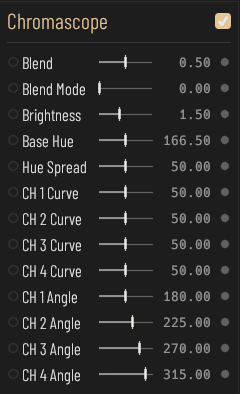
| Enable | 啟用 Chromascope 色彩多重宇宙效果 |
| Base Hue | Chromascope 基準色相 |
| Hue Spread | Chromascope 各通道間色相的分散範圍 |
| CH 1 to 4 Curve | Chromascope 該通道的色彩曲線 |
| CH 1 to 4 Angle | Chromascope 該通道的色相旋轉角度 |
7. Minimalize
以追蹤的種子點把畫面重建成多邊形。Topology 可選 Triangle（Delaunay 網格）、Cell（Voronoi）或 Square（Quadtree 矩形）；Fill 切換填滿多邊形或只畫邊線。多邊形顏色取自訊號鏈輸入，Modifier 只用來位移種子點。
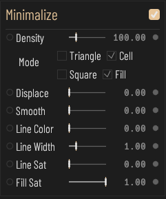
| Enable | 啟用 Minimalize 站：把 Chromascope 輸出依 seed 點重新切割成多邊形（Voronoi／Delaunay／Quadtree） |
| Density | seed 點數量上限（2-1500）；數值越高多邊形越細 |
| Topology | 切割拓樸：Triangle（Delaunay 三角網格）／Cell（Voronoi 細胞）／Square（Quadtree 矩形） |
| Fill | 切換填色：勾選後多邊形以 Fill Sat 飽和度填色，未勾僅顯示邊線（線框模式） |
| Displace | seed 點依 Modifier 影像 R/G 通道作 2D 位移（Image Displace 例外路徑：Modifier 此處為位移向量源，不作紋理採色）；0 關閉，值越大多邊形破碎晃動越明顯 |
| Smooth | seed 點時間平滑：高值抑制 LK 追蹤抖動，但會降低對畫面變化的反應速度 |
| Line Color | 多邊形邊線色相（0–1 對應 0–360°） |
| Line Width | 多邊形邊線寬度（像素） |
| Line Sat | 邊線飽和度（0 為黑/灰，1 為純色相色） |
| Fill Sat | 填色飽和度（Fill 未勾選時無視覺效果） |
8. 3D Object（3D 物件）
以 ray marching 繪製、貼上訊號鏈輸入的 3D 物件。Shape 在五種基本形之間漸變；Distort、Repeat、Spacing、Jitter、Smooth 塑形；Zoom、Pan、Tilt 控制攝影機。Displace 以 Modifier 亮度推擠表面。
| Enable | 啟用 3D Object：SDF raymarch 立體物件渲染 |
| RESET | 還原 3D Object 全部參數至預設值 |
| Shape | 3D 物件形狀：5 種基本體（球／方塊／環／八面體／陀螺體）之間漸變 |
| Size | 3D 物件整體尺寸 |
| Distort | 域扭曲（sin 域變形）強度 |
| Displace | 用 Modifier 影像亮度位移 3D 物件表面（0 關閉，值越大凹凸越深） |
| Repeat | 域重複：空間中複製物件成陣列的量 |
| Spacing | 重複陣列的間距 |
| Jitter | 陣列排列的抖動量 |
| Smooth | 形狀融合的平滑程度（smin） |
| Zoom | 相機到物件的距離（拉遠避免過曝） |
| Pan | 相機水平環繞角 |
| Tilt | 相機俯仰角 |
9. Triposr 3D（立體重建）
繪製貼上訊號鏈輸入的 3D 網格。網格來源為你選擇的 OBJ 檔，或 100 種內建 preset 形狀之一；本版本沒有從相機快照重建的功能。鏈中可以有多份 Triposr 3D，各自載入自己的網格。Rotate X / Y / Z、Scale、Displace、Wireframe 皆可調變。
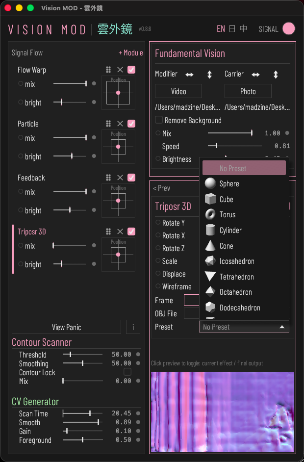
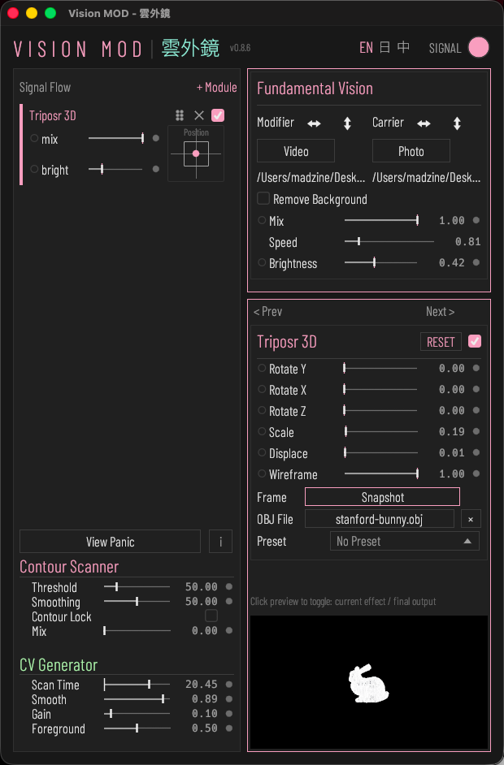
| Rotate Y | 3D mesh 繞 Y 軸的旋轉角度（0–360°） |
| Rotate X | 3D mesh 繞 X 軸的旋轉角度（0–360°） |
| Rotate Z | 3D mesh 繞 Z 軸的旋轉角度（0–360°） |
| Scale | 3D mesh 整體縮放（0.1–5） |
| Displace | 用 Modifier 影像亮度沿法線位移 mesh 頂點（0 關閉，值越大凹凸越深） |
| Wireframe | 線框混合：0 純實心、1 純線框，中間值為兩者混合 |
| OBJ File | 選擇 OBJ 檔（.obj）載入 3D 模型；清除則移除該 mesh |
| Preset | 選擇內建幾何體（100 種）作為 3D 模型；選 No Preset 取消選取 |
10. Particle（粒子）
把訊號鏈輸入取樣成 3D 粒子場。Density、Size、Jitter、Shape 定義粒子；Depth Mix 與 Displace 沿 z 軸移動粒子；Zoom 與 Scale X / Y / Z 變換整個粒子場。
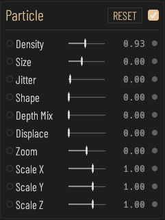
| Enable | 啟用 Particle 粒子化渲染 |
| RESET | 還原粒子場變換（Zoom／Scale X·Y·Z／視角）至預設值 |
| Density | 粒子密度（取樣的粒子數量） |
| Size | 粒子大小 |
| Jitter | 粒子位置抖動量 |
| Shape | 粒子形狀 |
| Depth Mix | 深度對粒子 z 軸分布的影響程度 |
| Displace | 用 Modifier 素材的亮度推動粒子 z 軸位移的強度 |
| Zoom | 粒子場的視角縮放 |
| Scale X | 粒子場 X 軸縮放（負值鏡像翻轉） |
| Scale Y | 粒子場 Y 軸縮放（負值鏡像翻轉） |
| Scale Z | 粒子場 Z 軸縮放（負值鏡像翻轉） |
11. Flow Warp
依 Modifier 計算出的光流位移畫面。
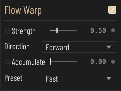
| Enable | 啟用 Flow Warp 光流位移效果（光流場由 Modifier 素材計算） |
| Strength | 光流位移效果的強度 |
| Direction | 位移方向（正向／反向／雙向） |
| Accumulate | 是否累積每幀的位移量 |
| Preset | 光流速度預設（快／中／極快） |
12. Feedback
把輸出回饋到自身以產生拖影。
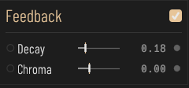
| Enable | 啟用 Feedback 影像回授效果 |
| Decay | 影像回授殘影的衰減速度 |
| Chroma | 回授過程的色偏量 |
13. Slow Motion（慢動作）
以 30 fps 把輸入畫面錄成一段，再以較慢速度循環播放。錄滿 Buffer 秒數後段落鎖定；拖曳 Buffer 推桿或把該站關掉再打開即可重新擷取。
| Speed | 播放速度（0.05–1，1 = 原速）：畫面固定以 30fps 錄入，讀頭以 30 × 此值的速率播出。0.25 = 4 倍慢動作。段落錄滿後循環播放 |
| Buffer | 段落長度（0.5–15 秒）：以 30fps 錄滿 N 秒後鎖定該段落並循環播放。拖動此推桿或把本站關再開即重新取段。值越大 VRAM 佔用越多 |
| Blend | 幀混合：在相鄰兩張已錄幀之間內插，讓慢動作連續不頓挫。關閉則直接跳幀播放 |
14. Plugin（外掛）
把第三方 fragment shader 當作一站執行。外掛是單一 .wgsl 檔，從外掛資料夾讀取（預設 ~/.visionmod/plugins/，只掃第一層）。資料夾由主視窗的 PLUGINS 列選擇，變更後自動重新掃描。本版本 Plugin 面板不顯示參數；使用資料夾中第一個編譯成功的外掛，編譯失敗的外掛會被略過，該站直接透傳畫面。
外掛檔頭
中繼資料寫在檔案開頭的 //! 註解區塊。api 與 name.en 必填；name.zh、name.ja、author、description、url 與 param 列選填。解析在第一行不是 //! 註解的行停止。外掛 id 為檔名小寫，因此改檔名等同換成另一個外掛。
- //! api = 1
- //! name.en = My Effect
- //! param0 = amount | 0.0 | 1.0 | 0.5 | mod | Amount（id、最小、最大、預設、mod 或 -、標籤）
15. 全域動作
Contour Scanner 面板頂端的動作列作用於整個程式。
| PRESET | SAVE AS 把目前所有參數存成檔案。LOAD 讀取檔案；載入會覆蓋目前所有參數且無法復原，因此會先出現「覆蓋載入 / 取消」的確認。 |
| PLUGINS | CHOOSE 開啟資料夾選擇器指定外掛資料夾；DEFAULT 回到預設資料夾。第二列顯示目前使用的資料夾，沒有時顯示「無可用資料夾」。 |
| OUTPUT | + WINDOW 開啟顯示訊號鏈末端的輸出視窗。輸出視窗可裁切、平移、縮放。 |
| View Panic | 視覺重啟：主視覺凍結時點擊強制刷新 viewport（不重設 GPU 資源） |
| Help (i) | 切換 Help 模式：開啟後 hover 元件由 top bar 改顯示在 cursor 旁 tooltip |
16. SIGNAL 視窗
top bar 的 SIGNAL toggle 開啟浮動視窗。左欄為預覽與 7 條 CV meter（Sequence 1 / 2、Movement、Color R / G / B / Saturation）。右欄為 Audio Inputs、CV Output 與 LFO。

CV meter
| Sequence 1 | SEQ1 序列訊號：掃描點沿輪廓移動時與錨點的水平距離（0-10V，已平滑）；填色即當前輸出 |
| Sequence 2 | SEQ2 序列訊號：掃描點沿輪廓移動時與錨點的垂直距離（0-10V，已平滑）；填色即當前輸出 |
| Movement | Movement 動能：Modifier 整張畫面前後幀亮度差的平均 ×Gain（0-10V，已平滑） |
| Color Red | Modifier 畫面的平均紅色量（0-10V），可作 modulation source 與 CV 輸出 |
| Color Green | Modifier 畫面的平均綠色量（0-10V），可作 modulation source 與 CV 輸出 |
| Color Blue | Modifier 畫面的平均藍色量（0-10V），可作 modulation source 與 CV 輸出 |
| Color Saturation | Modifier 畫面的平均飽和度（HSV S，0-10V），可作 modulation source 與 CV 輸出 |
Audio Inputs
| Card | Audio Inputs：4 軌音訊輸入電平（RMS）作為 modulation source |
| Device | 音訊輸入／輸出裝置選擇 |
| Channel | 該軌讀取輸入裝置的哪一個聲道 |
| Meter | 該軌輸入電平 meter（峰值）；頂端色線對應 Chromascope 同編號通道色 |
CV Output
Output 下拉選單同時選擇音訊輸出裝置與 MIDI 輸出埠。每一路再各自選擇來源訊號、音訊輸出聲道與 MIDI CC 編號。
| Card | CV Output：把 modulation 訊號送往音訊輸出聲道（ch3 起）與 MIDI 裝置 |
| Source | modulation 訊號的路由來源；同時送往音訊輸出通道與 MIDI 裝置（每路指定 CC#，14-bit） |
| Ch | 此 CV 訊號送到音訊輸出裝置的哪一個聲道（MIDI 端另以右側 CC# 指定） |
| CC | 此路 MIDI 輸出的 CC 編號（0-127）；以 14-bit 送出（MSB=CC、LSB=CC+32），CC>95 時降為 7-bit |
| Clock | 設計約束：CV 時脈由音訊輸出 callback 推進；未選輸出裝置時 CV 與掃描／meter／視覺凍結 |
LFO
| LFO 1 to 4 | 內建 LFO 1 至 4。每列有一個波形按鈕（點擊依序循環 Sine、Triangle、Square、Saw）與一個 Hz 頻率數值（0.01 至 20；拖曳調整，雙擊可鍵盤輸入）。可作為調變來源 LFO 1 至 4。 |
17. 調變與 MIDI Learn
可調變的推桿在標籤左側有一個小圓點。左鍵點圓點切換連線開關；右鍵開啟 popup，從網格選一個 Source 並設定 Amount。Amount 為雙極（-1 至 1，中點 0），來源可把參數往任一方向推。每個參數只保留一條連線。

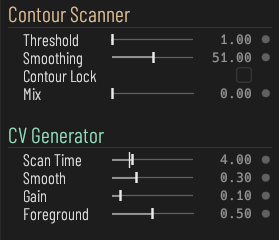
來源
| Sequence 1 / 2 | 輪廓掃描訊號；Smooth Sequence 1 / 2 為其平滑版本。 |
| Audio Input 1 to 4 RMS | 四軌音訊輸入的音量。 |
| Movement | 前景動態能量；Movement Smooth 為其平滑版本。 |
| Color Red / Green / Blue / Saturation | Modifier 畫面的平均顏色。 |
| LFO 1 to 4 | 在 SIGNAL 視窗設定的內建 LFO。 |
MIDI Learn
支援 MIDI 的推桿在數值右側有一個綁定圓點。右鍵點它選 MIDI Learn，再動一下 MIDI 裝置上的控制器；綁定後圓點變成強調色。同一選單會顯示已綁定的通道與 CC，並提供 Clear Binding。只學習 7-bit Control Change 訊息。
18. Mac App Store 版本
Mac App Store 版本在完成一次性購買前，會在輸出畫面右下角顯示半透明的 VISION MOD 浮水印。購買列位於 PRESET 上方。
| Remove Watermark | 一次性購買，永久移除輸出畫面上的浮水印。價格由 App Store 依你所在地區顯示。購買後該列顯示「已購買：浮水印已移除」。若購買正在等待核准，核准後會自動移除浮水印。 |
| Restore Purchases | 已經買過（例如重灌或換電腦）時，用同一個 Apple 帳號恢復購買，不會重複收費。 |
| IMPORT | 透過資料夾選擇器匯入舊 DMG 版本存下的設定（位於 ~/.visionmod 或 ~/.config/visionmod），匯入後立即套用。 |